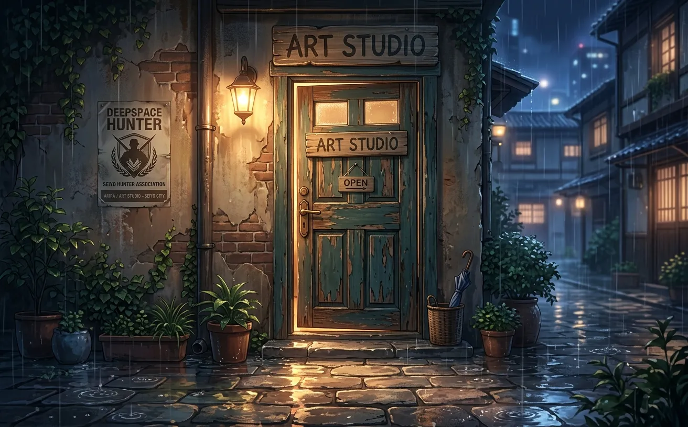
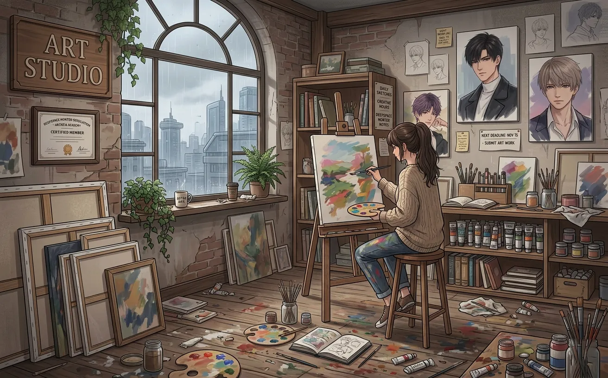
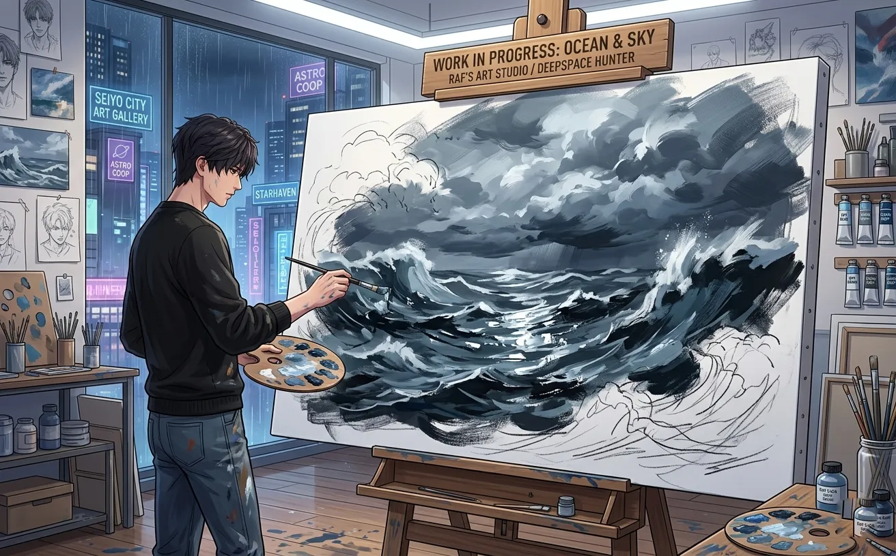
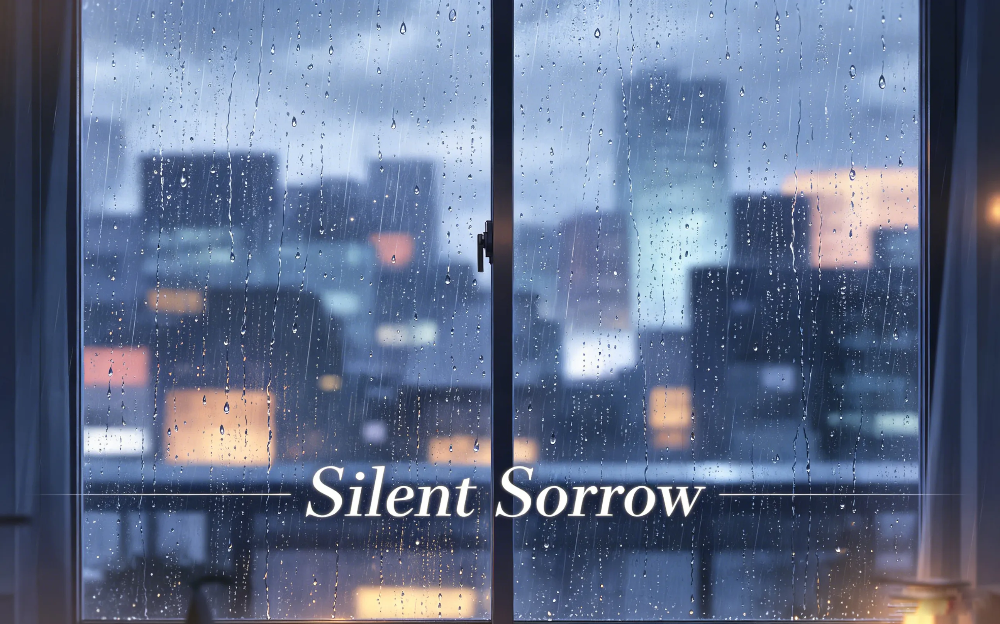
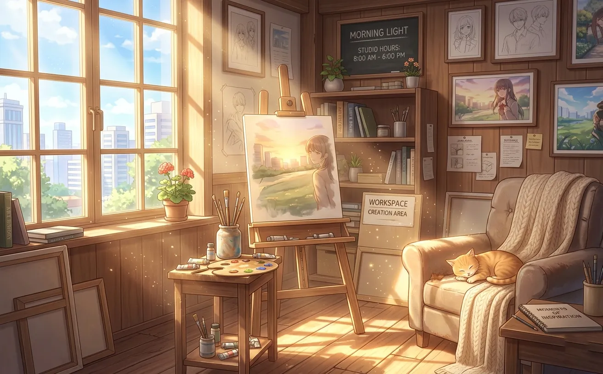
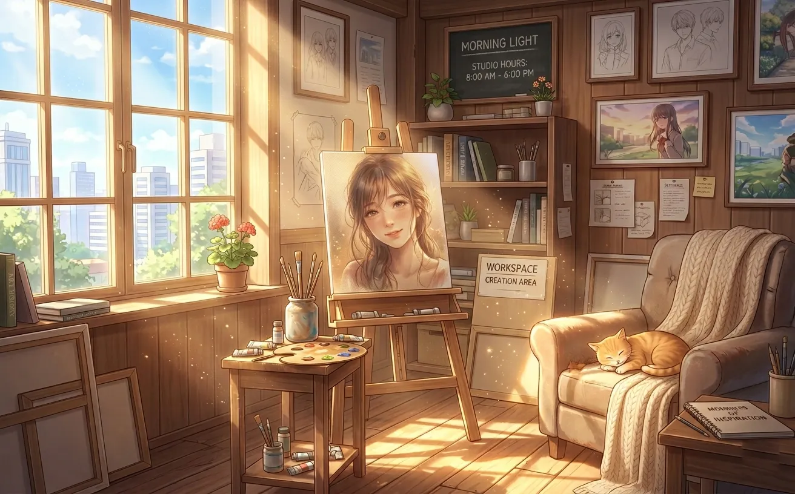
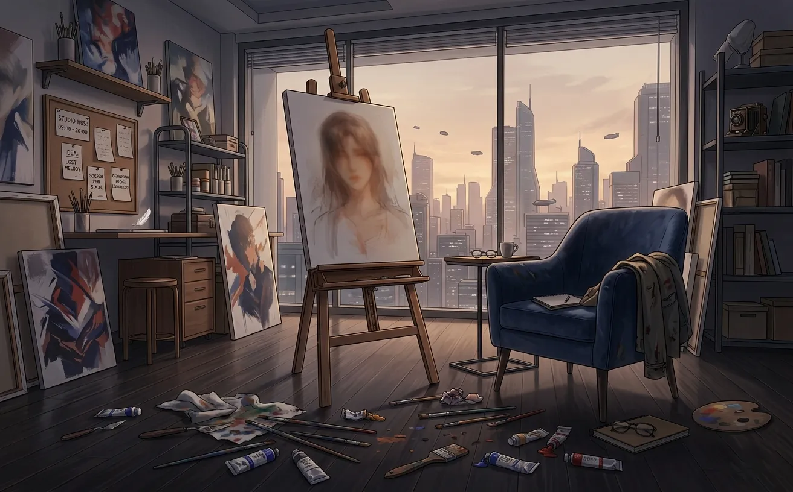
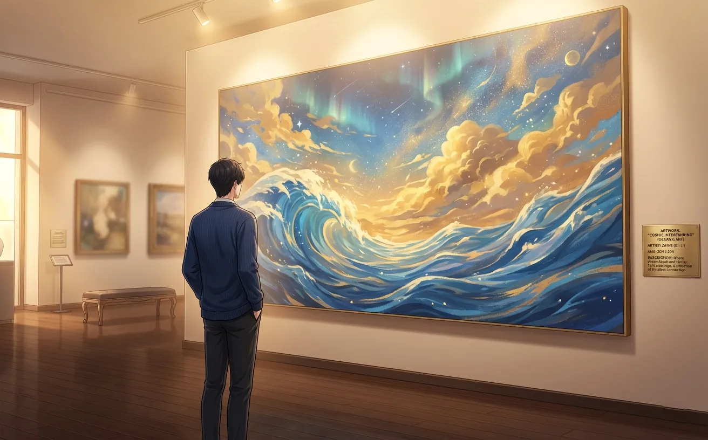
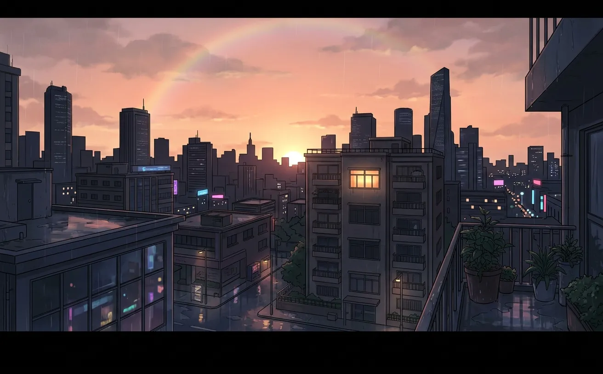

she came to his studio to escape the rain. she stayed because he was painting something she couldn't look away from.
it started with rain.
the kind that falls without warning. the kind that soaks through coats and ruins shoes and makes you regret leaving the house.
she didn't plan to be there. she was just walking. trying to clear her head. the rain had other ideas.

she found the building by accident. a narrow staircase between a bakery and a bookstore. the sign said "art studio — second floor." the door was old. the paint was peeling. it was open.
she shouldn't have gone in. it wasn't her space. she didn't know who lived there. but the rain was cold, and her coat was soaked, and her feet were already wet.
she climbed the stairs.
the door at the top was open too. light spilled out. she could smell paint. turpentine. something else she couldn't name.
she pushed the door open wider. stepped inside.
the studio was large. larger than she expected. canvases leaned against every wall. some finished. some blank. some covered with cloth. the floor was stained with paint. the windows faced the street, but the rain blurred everything outside.
and there was a man.
he was standing in front of a huge canvas. his back was to her. his hair was purple — no, pink — no, somewhere in between. paint stained his hands, his shirt, even his face.
he didn't turn around.

she stood in the doorway. dripping water on the floor. he didn't move.
"i'm sorry," she said. "the rain—"
"i heard." his voice was quiet. not cold. just... distant. like he was somewhere else.
"i can leave."
"you're already wet."
she didn't know what that meant.
"the floor," she said. "i'm getting water everywhere."
he shrugged. "the floor has seen worse."
she looked down. the floor had indeed seen worse. paint. coffee stains. what might have been wine.
she stepped inside. just a little. not close to him. just past the doorway.
she sat on the floor. cross-legged. against a wall covered in sketches. she watched him paint.

the painting was huge. almost as tall as she was. it wasn't finished — she could tell. parts were detailed, almost photorealistic. other parts were just rough strokes, suggestions of color, promises of what might come.
it was the ocean. or maybe the sky. or maybe both. the colors bled into each other — blue and gray and gold and something that looked like fire.
she couldn't look away.
"what is it?" she asked.
"a place i've never been."
"then how do you know what it looks like?"
he paused. his brush hovered over the canvas. "i dream about it."
she wanted to ask more. but something in his voice told her not to.
she watched him work. he didn't seem to mind. or maybe he didn't notice. she couldn't tell.

the rain slowed. then stopped. she could hear it dripping from the eaves. the clouds were breaking apart. sunlight started to filter through the windows.
she should leave.
she didn't.
"it stopped," she said.
"i know."
"i should go."
"you should."
neither of them moved.
she told him hers. he didn't repeat it. but his brush paused. just for a second.
"that's a nice name," he said.
"you haven't looked at me."
"i don't need to."
"how do you know i'm not ugly?"
he almost laughed. almost. "painters see things differently."
he turned around.
not quickly. not dramatically. just... slowly. like he was giving her time to prepare. or maybe giving himself time.
his eyes were blue. not the pale blue of the sky. the deep blue of the ocean. the kind that made you feel like you were drowning.
he had paint on his cheek. a smear of purple. she wanted to wipe it off. she didn't.
he smiled. small. almost invisible. "i wasn't talking about you."
she laughed. she didn't mean to. it just came out.
he looked at her. really looked. like he was memorizing her face. like he was trying to figure out if he'd seen her before.
"have we met?" he asked.
"no."
"you look familiar."
"maybe you painted me."
he didn't answer. he just stared. then he turned back to his canvas.

she didn't plan to come back. but the next day, her feet carried her to the same street. the same staircase. the same open door.
he was there. same spot. same canvas. he didn't turn around.
"you're back," he said.
"the door was open."
"it's always open."
she sat on the floor. same spot. watched him paint.
"why don't you lock it?"
"maybe i'm waiting for someone."
"who?"
he didn't answer.
they fell into a rhythm. she would arrive in the afternoon. sit on the floor. watch him paint. sometimes they talked. sometimes they didn't.
he never asked why she kept coming. she never explained.

one day, she arrived and he was already working. but he wasn't facing the big canvas. he was facing a small one.
she walked around to see it. he didn't stop her.
it was her.
not exactly her — the colors were wrong, the angles were strange — but it was her. the way she sat on the floor. the way her hair fell across her face. the way she looked at him when she thought he wasn't watching.
she stared at it. at herself. at the way he saw her.
"it's good," she said.
"it's not finished."
"what's missing?"
he looked at her. then at the painting. then back at her.
"you."
she didn't know what that meant. she still doesn't.

she didn't come on tuesday.
he didn't notice at first. he was deep in the painting. the big one. the ocean. the sky. the fire.
then he looked at the floor. her spot. empty.
he waited. painted. waited. she didn't come.
wednesday. same thing. thursday.
he didn't sleep. he painted through the night. the small portrait was finished. he put it facing the wall.
on friday, the door opened.
he didn't turn around. he was afraid to.
"i'm sorry," she said. "i was sick."
he exhaled. he didn't know he'd been holding his breath.
"you should have texted."
"i didn't have your number."
he turned around. walked to his desk. picked up a marker. wrote his number on the back of a receipt. handed it to her.
she smiled. "that's not how phones work."
"it's how i work."

the painting was finished on a sunday. she was there.
he stepped back. looked at it. didn't say anything for a long time.
"it's done," she said.
"i know."
"what now?"
he looked at her. "i don't know."
she stood up. walked to the canvas. touched the edge of the frame. "it's beautiful."
she looked at him. "you could paint another one."
"i could."
"what would you paint?"
he thought about it. "something i've never seen before."
"like what?"
he didn't answer. but he was looking at her.

she still comes to the studio.
not every day. but often. she brings coffee now. she knows how he takes it. (black. too much sugar.) he pretends to complain. he drinks it anyway.
the big painting is still there. leaning against the wall. he hasn't moved it. he doesn't know where to put it.
the small portrait is on his desk. facing up. he looks at it when he's stuck. when the colors won't cooperate. when the canvas feels too empty.
he didn't tell her that she was what came next.
he didn't have to. she already knew.
the rain stopped a long time ago. but she stayed.